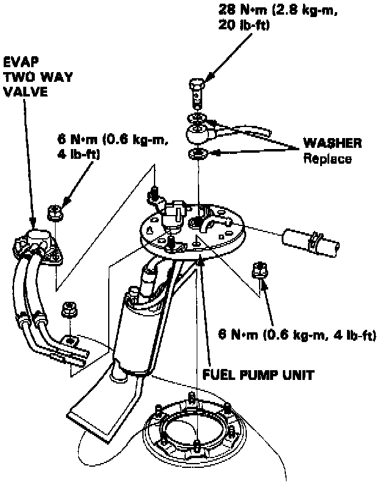

Fuel Pump: Service and Repair
REPLACEMENT
WARNING: Do not smoke during the test. Keep open flame away from your work area.

1. Remove the fuel tank.
2. Disconnect the connector from the fuel pump.
3. Remove the fuel pump mounting nuts.
4. Remove the fuel pump from the fuel tank.
5. Reverse order to reinstall.